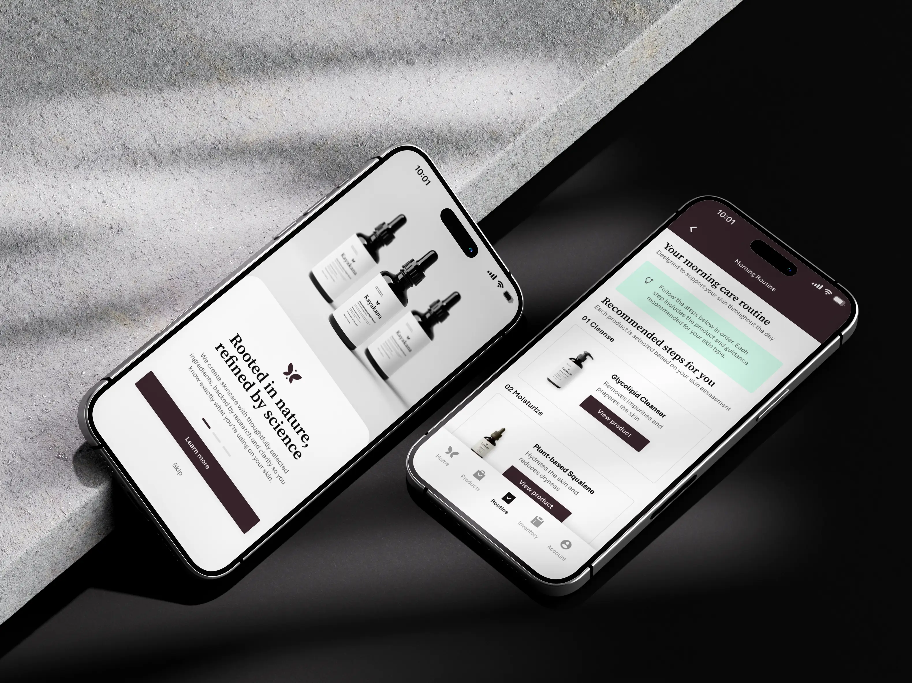

Concept Project
Mobile App UI/UX Design

01. The Mission & Context
I’ve always felt that skincare is more complicated than it needs to be. Most people have a drawer full of half-used bottles because they aren't sure what works. I wanted to design a 'companion' app that takes the guesswork out of the routine. This was my first full-scale project where I handled everything, from the initial brand mood boards to a clickable prototype.
02. The Problem Space
I noticed two main frustrations. First, people buy products based on 'hype' rather than their actual skin needs. Second, there’s nothing more annoying than running out of your favorite cleanser on a Monday morning. I decided to focus on a design that solves both: a smart assessment for the 'buy' and an inventory tracker for the 'use'.
03. User Insights & Strategy
I didn't want the app to feel like a math test. I looked at how people naturally describe their skin using words like 'tight' or 'shiny' and built a quiz logic around that. My goal was to make the data entry feel like a conversation so users wouldn't get bored halfway through.
04. Sketches and Wireframes
I started with some pretty messy sketches in my notebook to figure out the flow. The hardest part was the 'Inventory' screen. Initially, I tried to pack too much info onto it. After looking at it for a few days, I stripped it back to just the essentials: What is it? How much is left? When do I need more?
05. Implementation and Branding
For the look, I went with 'Soft-Medical.' I wanted it to feel clean and trustworthy, but not cold like a hospital. I spent a lot of time in Photoshop creating custom product mockups because I wanted the app to feel like something you could actually reach out and touch. I chose typography that stays readable even if you’re looking at it through sleepy eyes at 7 AM.
06. The Complete Design
The final result is a system that grows with the user. You take the assessment, get your routine, and then the app quietly tracks your usage in the background. It even pings you when a bottle hits 20% remaining. It’s the kind of app I personally wish I had on my phone.
07. Learnings and Reflections
This project was a massive learning curve. It taught me that 'pretty' doesn't matter if the logic is broken. Coming from a retail background, I’ve spent 5 years watching customers get frustrated by bad systems. That experience really pushed me to prioritize clarity over cleverness. If I were to do it again, I’d spend even more time on the 'onboarding' flow to make it even faster.
Enrique Rosalin
This portfolio's designed in Figma. Created on Visual Studio Code. Deployed with Github Pages. Type is set to Inter. Most ideas came crawling from the void. Fueled by 100+ cups of Iced Coffee.